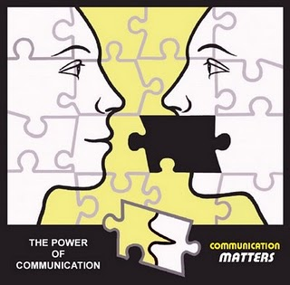
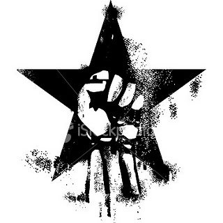
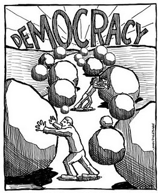

Radikaller icin Kurallar
Prensese Mektuplar, unlu aktivist ve yazar Saul Alinsky‘nin 1971 yilinda yayinlanan “Radikaller icin Kurallar” isimli kitabinin onsozunu prensesin duygularinin mutercumani Didem’in cevirisi ile sizlerle paylasmaktan kivanc duyar. Her aktivistin uzerine dusunmesi gereken cok onemli noktalara degindigine inandigimiz Alinsky’nin bu yazisini ilgisini cekebilecegini dusundugunuz herkesle paylasasiniz, baska bloglarda, websayfalarinda yayinlayasiniz.
Radikaller için Kurallar
Gerçekçi Radikaller için Pragmatik İlkeler Kitabı
Önsöz
Bugün Devrimci hareketin iki hedefi var: ahlaki ve maddi. Bu hareketin genç kahramanları idealistlikleriyle adeta ilk Hristiyanları anımsatırken, şiddeti teşvik ediyor ve “Sistemi yık” diye haykırıyorlar. Sistemle ilgili bir yanılsama içinde olmasalar da, kafalarında bu dünyayı nasıl değiştireceklerine dair birçok yanılsama var.
Şu an, bir hareketin öncüleriler ve neredeyse her şeye sil baştan başlamak zorunda kaldılar. 50li yılların başında Joe McCarthy felaketinden çok azımız kurtuldu; katı Marxism’in dialektik maddeciliğinin ötesinde bir anlayış ve görüş biçimi geliştirmiş olanların sayısı ise çok daha az. Gençler, etraflarında yeni nesle tecrübelerini aktaracak ve olanların iç perdesini görmelerine yardımcı olacak kişiler bulamadılar. Karşılarında onların deyimiyle, “maddeci, çürümüş, burjuva değerlerini benimsemiş, pes etmiş ve şiddetin kol gezdiği” bir toplum buldular. Bize tamamen sırt çevirmiş olmalarına şaşırmamak lazım.
Bugünkü nesil yaşamına ve bu dünyaya bir anlam verebilmek için müthiş bir uğraş veriyor. Birçoğu, orta sınıf ailelerin çocukları. Aileden gelen zenginliği, para getiren bir iş hedefini, banliyöde bir evi, bir arabayı, klüp üyeliğini, first-class seyahatleri, statüyü, güvenliği, anne babalarının başarı addettiği her şeyi reddettiler. Tüm bunlardan usanmışlardı. Ailelerinin bunlar yüzünden sakinleştirici, alkol bağımlılığı, uzun süredir katlanılan evlilikler, yüksek tansiyon, ülser, hayalkırıklığına ve “iyi bir yaşam” yanılsamasının çöktüğü noktaya sürüklenişlerini izlediler. Bizim neslimizin siyasi liderlerinin neredeyse akla hayale sığmaz derecede gülünç duruma düşüşünü gördüler. Geçmişte, belediye başkanından, valisinden tutun da Beyaz Saray’a kadar, siyasi liderlere neredeyse hayranlığa varan bir saygı duyulurdu. Bugün hepsine küçümsemeyle bakılıyor. Bu olumsuzluk, bugün, polisten, yargıdan sistemin kendisine kadar geniş bir alana yönelik bakışa hakim. Kitle iletişim araçlarının, her gün, toplumun doğuşundan gelen riyakarlığını, tezatlarını; toplumsal ve siyasi hayatımızın her boyutunun açıkça fire verişini gözler önüne serdiği bir dünyada yaşıyoruz. Gençler “aktivist” katılımcı demokrasilerinin karşı tezine- nihilist amaçlarla gerçekleştirilen bombalamalar ve cinayetlere çevrildiğine şahit oldular. Geçmişin her derde deva siyasi ilaçları, mesela Bolşevik ve Çin devrimleri tarih oldu ve başka başka adlarla anılır oldu. Özgürlük arayışı rotasını, hedefini kaybetti. Gençler, tutuldukları bilgi ve olay bombardımanın altında ezilip, dünyayı bir sarmal halinde dönen, insanın zamanın başlangıcından bu yana aynı şeyi, anlamlı bir yaşam biçimini aradığı, bir tımarhane olarak görür oldular. İnsanoğlu dinlerle, siyasi felsefe sistemleriyle, Newton’un kurduğu gibi bilimsel sistemler kurarak ya da türlü türlü ideolojilerle daha kesin bir rota aramıştır. İşte, “tüm parçaları birleştirmek” klişesinin ardında yatan da budur, yoksa insanlar bilmiyorlar mı ki, tüm değerler, etkenler göreli, akışkan, değişkendir ve “Tüm parçaları birleştirmek” ancak göreli olarak mümkündür. Parçalar, tıpkı bir kaleydoskopun değişen görüntüsü gibi değişip birlikte hareket edeceklerdir.
Geçmişte hem entelektüel açıdan hem de fiziksel açıdan dünya çok daha küçük, basit ve düzenliydi. İnsana inanılır geliyordu. Bugün her şey o kadar karmaşık ki anlaşılırlığını yitirdi. Bir insan için aya çıkmak diğerleri sosyal yardım kuyruğunda beklerken ya da Vietnam’da özgürlük adına, yolsuz bir diktatörlük için insan öldürüp, can verirken nasıl bir anlam taşıyabilir ki? Bunlar insanın çılgınlık çamuruna saplanmışken yüce bir değere tutunduğu anlardır. Kurulu düzen intihara eğilimli. Tıpkı aşırı soldan bazı kişiler gibi. Tek fark, bu sistemin aşırı solun asla olamayacağı kadar yıkıcı olabilmesi. Çaresizlik ve umutsuzluğun sonunda ölüm vardır. Şu an da tüm ülke üzerinde havada asılı bir ölüm duygusu var.
Günümüz nesli tüm bunları karşısına almış ve “Ben ömrümü ailemin ya da arkadaşlarımın geçirdiği gibi geçirmek istemiyorum. Ben bir şey yaratmak, kendim olmak, kendime özgü bir şeyler yapmak, ben yaşamak istiyorum. Bir önceki nesil bunları anlamıyor ve daha kötüsü de anlamak istemiyor. Ben bir bilgisayara girilen data, bir anketin istatistiği, ya da kredi kart kullanıcısı bir seçmenden ibaret olmak istemiyorum.” Gençlere göre dünya çıldırmış ve çöküş halinde.
Öte yandan, bir önceki neslin üyelerinin de kafaları az karışık değil. Çok seslerinin çıkmamasının veya bilinçlenememelerinin nedeni belki de dünyanın daha basit olduğu bir geçmişe kaçmalarıdır. Bir gün, bir şekilde her şeyin yoluna gireceği umuduyla eski değerlere tutunuyorlar. Zamane gençlerinin kafa karışıklığının zamanla geçeceğini düşünüyorlar. Dünyayı şu haliyle çözemedikleri için genç nesille her türlü tartışmadan şu öfke uyandıran “benim yaşıma gelince anlarsın” klişesiyle kaçıyorlar. Gençlerden biri çıkıp da “Sen benim yaşıma gelince, ki bu da hiçbir zaman demektir , işte o zaman anlayacaksın, yani hiçbir zaman anlamayacaksın.” dese tepkileri ne olurdu merak ediyorum. Anlamak için çaba gösterdiklerini iddia edenler “Çocuklarımla veya arkadaşlarıyla konuştuğumda onlara “Bakın söylediğiniz şeylerin önemli olduğunu düşünüyorum ve saygı duyuyorum. Siz bana “geri kafalı” diyorsunuz, “ derdinizi anlamadığımı neden bahsettiğinizden bile haberim olmadığını” ve daha bir sürü şey söylüyorsunuz. Peki size katıldım diyelim bu sefer ne istediğinizi sorunca “Kendi istediğim şeyi yapmak istiyorum “ İyi de nedir bu kendi istediğiniz şey? Daha iyi bir dünya istediğinizi söylüyorsunuz. Ne gibi? Sakın barış, sevgi ve diğer zırvaları anlatmayın çünkü insan insandır, büyüyünce anlarsınız. Üzgünüm şu “benim yaşıma gelince” cümlelerinden kurmak istemezdim. Kesinlikle “büyüyünce anlarsın” gibisinden bir şey söylemek istemiyorum. Söylediklerinize saygı duyuyorum. Niye sustunuz öyle? Siz ne istediğinizi biliyor musunuz ki? Neden bahsettiğinizi biliyor musunuz? Niye bir türlü buluşamıyoruz?”
İşte buna nesiller arasındaki uçurum deniyor.
Şimdiki neslin istediği şeyin aslında öncekilerin öteden beri istediğinden bir farkı yok- bir anlam, dünyanın ve yaşamın ne olduğunu anlamak- bir düzen için mücadele etme fırsatı.
Eğer gençler günümüzde Bağımsızlık Bildirgesini yazıyor olsalardı, muhtemelen şöyle başlardı. “İnsanlık dışı olaylar sırasında” ve verdikleri örnekler Vietnam’dan, ABD’deki siyahilere, Latinlere, Porto Rico varoşlarına, göçmen işçilere, Appalachia’ya, dünyada hüküm süren nefrete, cehalete, hastalıklara ve açlığa kadar uzanırdı. Bu tür bir liste insanın işlerinin absürtlüğünün ve yaşamımızın eğer varsa anlamını bilmemekten doğan o umutsuzluğun, boşlukta kalmışlığın ve korkutucu yalnızlığın altını çiziyor.
Onlar değerlerden bahsederken bir neden arayışı içindeler. En azından bir süreliğine insanlığın en büyük sorusuna “Neden buradayım?” a bir yanıt arıyorlar.
Gençler kaotik dünyalarına değişik şekillerde tepki gösteriyorlar. Kimileri paniğe kapılıp kaçıyor, zaten yıkılacak sistemi kendi çürümüşlüğü ve yolsuzluğu içinde rasyonalize ediyorlar, kaçıyor, hippie ya da yippie oluyorlar, uyuşturucu kullanıyor, komünlerde yaşamayı deniyor, kaçmak için her şeyi yapıyorlar. Kimileri anlamsız, yenilgiye mahkum kavgalara girip, kurdukları mantığı sağlamlaştırmaya çalıştılar ki sonunda “Eh biz üzerimize düşeni yapmaya çabaladık” diyebilsinler, sonra onlar da kaçtılar. Diğerleri, vicdan azabından ne yapacağını şaşırıp çılgına döndüler. Bunlar Weathermen ve benzerleriydi ve büyük kaçışı, intiharı seçtiler. Onlara söyleyecek hiçbir sözüm yok, yalnızca acıyorum , kimilerini de, örneğin ölü arkadaşlarını bırakıp Cezayir’e ya da başka yerlere gidenleri de küçümsüyorum.
Bu kitap istenmeyen tavsiyeler verenin kibriyle yazılmadı. Birçok gencin Amerika’da yüzlerce kampüste tüm gece süren toplantılarda bana sordukları soruların cevabı deneyim ve tavsiyelerdir içindekiler. Bu kitap mücadele etmeye kararlı, yaşama bağlı genç radikaller için yazıldı.
Burada devrimden söz ediyoruz, aydınlatmadan değil, çok yükseğe veya alçağa atış yaparak hedefi kaçırmak mümkün. Bir kere, devrim için de tıpkı sevgi ya da mutluluk için olduğu gibi kurallar yok, ancak dünyayı değiştirmek isteyen radikaller için kurallar var; politikada yer ve zamandan bağımsız çalışan merkezi kavramlar var. Bunları bilmek sisteme pragmatik olarak hücüm etmek için temel teşkil ediyor. Bu kurallar gerçekçi bir radikal olmakla içi geçmiş sözcükler, sloganlar kullanıp, polise “domuz” veya “beyaz faşist ırkçı” diyen ve kendini başkalarının “Ha o mu! o ve onun gibiler ” dedirtecek ve kendinden soğutacak derecede klişeleştiren, yalnızca söylemde radikal olmak arasındaki çizgiyi belirliyor.
Birçok genç aktivistin iletişim sanatını anlayamamaları felaket oldu. Bir kişinin dinleyicisinin deneyimleri dahilinde konuşması-ve değerlerine tamamen saygı duyması iletişim kurması gibi temel bir fikrin kabaca anlaşılması bile Amerikan Bayrağı’na saldırıları ortadan kaldırdı. Eylem düzenleyen sorumlu biri bayrağa ihanet edenin sistem olduğunu ve bayrağın kendisinin Amerika’nin özlem ve umutlarının simgesi olduğunu bilir ve bu mesajı dinleyicisine sezdirirdi. İletişimin bir diğer kademesinde mizah son derece gerekli, çünkü mizah yoluyla ciddiyetle sunulsa reddedilecek birçok fikir kabul görür. Bugünkü üzgün ve yalnız bir nesil. Çok az gülüyor, işte trajik olan da bu.
Gerçek bir radikal için, kendi istediğini yapmak ancak toplum içinde, insanlar için ve insanlarla birlikte mümkündür. Her şeyin insanın işi ne tarafından tutup, nereden başlayacağını bilmez hale getirecek kadar birbirine bağımlı olduğu bir dünyada, yıllar yılı süren yenilgiler yaşandı. Öyle ki toplum kimi insanların üstüne üstüne gelmeye başladı ve bu insanlar kendi içlerine kapandılar, “kendi istediklerini yapmaya” odaklandılar. Genellikle onları akıl hastanelerine kapatıp şizofren teşhisi koyduk. Gerçek bir radikal eğer uzun saçın iletişim ve organizasyona psikolojik bir engel teşkil ettiğini düşünüyorsa saçını keser. Eğer Ortodoks Yahudi bir topluluk kuruyor olsaydık, toplantıya elimde jambonlu sandviçle gitmezdim, tabi eğer reddedilip kaçmak için bir bahane bulmuş olmak istemiyorsam. Benim “istediğim”, eğer bir örgütlenme çabasındaysam, toplumdaki insanlarla tam olarak iletişim halinde olmak. İletişim yoksa aslında sessiz kalıyoruz demektir ve tarih boyunca boyun eğmeye eş görülmüştür- şu halde sisteme boyun eğmeye.
Bir organizatör olarak dünyayı görmek istediğim yerden değil, dünya şu an nasılsa oradan başlarım. Dünyayı olduğu gibi kabul ediyor olmamız hiçbir şekilde onu olmasına inandığımız hale getirme isteğimizi azaltmaz, onu olmasını istediğimiz yönde değiştirmek için şu anından başlamamız gerekiyor. Bu da sistemin içinde çalışmak demek.
Sistemin içinde çalışmanın bir nedeni daha var. Dostoyevski, insanların en çok korktuğu şeyin bir adım atmak olduğunu söylemiştir. Her türlü devrim niteliğindeki değişiklikten önce, kitlelerde pasif, doğrulayıcı ve karşı koymayan bir değişim tavrı gelmelidir. Hakim sistemde o kadar düş kırıklığına uğramış, yenik, kayıp ve geleceği sallantıda hissetmeliler ki geçmişi bırakıp geleceği değiştirmeye istekli olsunlar. Bu kabul her devrime gerekli olan bir dönüşümdür. Bu dönüşümü gerçekleştirmek organizatörün sistemin içinde çalışmasını gerektirir, yani yalnızca orta sınıfta değil, yıllık gelirleri 5000 ile 10000 dolar arasında değişen (1971) 70 milyon kişiyle yani Amerikan halkının %40’ıyla çalışmak. Çünkü bu dilim memur veya işçi olarak tanımlanarak baştan savılamaz. Biraz pasif ve hafif de zorlayıcı olmaya devam edecektir. Eğer onlarla iletişime girmezsek, onları ittifaka davet etmezsek, sağ kanada geçecekler. Belki de bu kaçınılmaz ama bunun kendiliğinden olmasına izin vermeyelim.
Gençlerimiz, amacı olan bir hareket için gerekli ön koşulları yerine getirmek konusunda biraz sabırsız. Etkin bir örgütlenme, anında ve köklü bir değişim isteği yüzünden bozuluyor, ya da daha önce belirttiğim gibi devrim değil aydınlanma isteği yüzünden. Bu tür bir şeyi tiyatro eserlerinde görürürüz, birinci perdede kişiler ve olay örgüsü tanıtılır, ikinci perdede oyun seyricinin ilgisini üzerinde tutmaya çalışırken kişiler ve olay örgüsü gelişir ve son perdede iyi ve kötü dramatik yüzleşmelerini yaşar ve düğüm çözülür. Bugünün nesli birinci ve ikinci perdeyi atlayıp dosdoğru son perdeye geçmek istiyor, bu durumda da oyundan söz edilemiyor, yalnızca yüzleşme sevdasına yüzleşme- bir parlama ve karanlığa geri dönüş…Güçlü bir biçimde örgütlenmek zaman alır. Bıktırıcıdır ancak oyunun kuralı budur. Oynamak istiyorsan yalnızca “İmparator’a ölüm” diye haykırmak yetmez.
Sistemin “içinde” çalışmanın alternatifi nedir? “Sistemi yık!” diyerek tonlarca söylemde kalan laf etmek, radikal hippiler gibi “Yap”, “İstediğini Yap” diye haykırmak. Başka: Bombalar? Saldırılar? Polis öldürüldüğünde sessiz kalmak, daha başkaları öldürüldüğünde “faşist domuzlara acıma” diye haykırmak? Polise saldırıp, tuzak kurmak? Polis intiharı? “Güç silahın namlusundan çıkar” derler, diğer taraf tüm silahlara sahipken ne absürd bir yakınma. Lenin pragmatistti, sürgünden, zamanın Petrograd’ına döndüğünde Bolşeviklerin gücü oy sandığı vasıtasıyla ele geçirmeye sıcak baktıklarını , ancak silahları da ele geçirince bunu yeniden düşüneceklerini söylemişti. İki yüzlü militan söylemler…Mao’dan, Castro’dan, Che Guavera’dan benzer laflar bizim, her şeyin bilgisayar ortamına taşındığı, nükleer enerjiyle çalışan, kitle iletişim toplumuza ancak Kennedy Havaalanında bir jet pistinde giden fayton kadar alakalı.
Biz de radikal pragmatizm adına, tüm baskılarıyla bizim sistemimizde aklımızdakini belirtip, yönetimi eleştirebildiğimizi, politikalarına karşı çıkabildiğimizi ve bir siyasi muhalefet tabanı oluşturmak için çalışabileceğimizi unutmayalım. Tabi ki, hükümetin tacizleri yok değil, ama yine de göreli bir mücadele özgürlüğü mevcut. Ben hükümetime karşı çıkabilir, onu değiştirmek için örgütlenebilirim. Moskova’da, Pekin’de, Havana’da yapılanlardan çok daha fazlası olur bu. Kızıl Ordu’nun “kültür devrimine” tepkisini ve Çinli üniversite öğrencilerinin kaderini bir hatırlayın. Burada yaşadığımız bombalama olayları ya da mahkeme salonlarında patlayan silahlar Rusya’da,Çin’de ve Küba’da büyük bir temizliğe ve kitle idamlarına neden olurdu. Bu yüzden geniş düşünmeliyiz.
Sistemden başlayacağız çünkü siyasi çılgınlık söz konusu değilse başlayacak başka bir yer yok. Devrimci değişiklik isteyenlerin için devrimin ardından reform hareketlerinin gelmesi gerektiğini anlaması son derece önemli. Siyasi bir devrimin siyasi reformun desteği olmadan sürdürülebileceğini varsaymak siyasette imkansız olanı istemek olur.
İnsanlar tanıdık deneyimin güvenli alanından aniden çıkmaya gönüllü olmazlar, kendi deneyimlerinden yeni olana geçmek için bir köprüye ihtiyaç duyarlar. Devrim isteyen bir organizatör kendi yaşamının hakim çizgilerini değiştirmeli, ajite etmeli, bugünkü değerlerle ilgili hayal kırıklıklarını, memnuniyetsizlikleri su yüzüne çıkartmalı ve bir değişim fırtınası olmasa da en azından pasif, doğrulayıcı bir, karşı gelmeyen bir ortam hazırlamalıdır.
John Adams “Devrim daha savaş başlamadan başlamıştı. Devrim insanların akıllarında ve kalplerindeydi. İnsanların ilkelerinde, fikir ve duygularındaki bu değişiklik gerçek Amerikan Devrimi’ydi.” diye yazmıştı. Öncesinde bir reform olmayan bir devrim yıkılmaya veya totaliter bir diktatörlük olmaya mahkumdur.
Bir reform milyonlarca insanın artık geçmişin alışkanlıkları ve değerleri karşısında gözünün açılması anlamına geliyor. Bu insanlar neyin işe yarayacağını bilmiyorlar belki, ancak, hakim sistemin kendini yok eden, insanı yıldıran ve umutsuzluğa düşüren bir sistem olduğunu biliyorlar. Değişim için harekete geçmeyecekler fakat harekete geçenlere karşı da çıkmayacaklar. İşte o zaman devrim zamanı gelmiş demektir.
Nedenleri ne olursa olsun, reformun tersini teşvik edenler, aşırı sağın müttefikleri haline gelirler. Siyasi alanda birtakım aşırı solcu gruplar o kadar abarttılar ki şimdi aşırı sağdan ayırt edilmez oldular. Bu bana, Hitlerin siyasete yeni atıldığında, “insancıllar” tarafından babasının reddi ve çocukluk çağında yaşanan travma sebebiyle affedilmesini hatırlatıyor. Senatör Robert Kennedy’nin suikastını, Tate cinayetlerini, Marin County Mahkemesi’ndeki cinayet ve adam kaçırma olaylarını “devrimci hareket” gibi göstermeye çalışanlar ancak siyasi maske altında bir psikozu saklamaya çalışıyordur. Sonra milyonlarca insan “Evet gidişatımız iyi değil ve bunu değiştirmek istiyorduk ama herhalde bu canice çılgınlık için değil- şu anki gidişat ne kadar kötü olursa olsun ondan daha iyidir.” diyor ve böylece harekete sırt çevirmeye başlıyorlar. Geri adım atıp “Kamu düzeni” adına kitlelerin baskı altına alınmasına razı oluyorlar.
1968 Demokratik Konvansiyonu’nda Chicago Polis’inin ve ordunun attığı göz yaşartıcı bombalar ve şiddet içeren müdahaleleri sırasında birçok öğrenci bana şu soruyu sordu. “Hala sistemin içinde çalışmamız gerektiğini düşünüyor musun?”
Onlar New Hampshire’da, Eugene Mc Carthy’yle birlikte bulunan ve ülkeyi baştan başa onunla gezen öğrencilerdi. Bazıları Los Angeles’ta öldürüldüğünde Robert Kennedy’nin yanındaydı. Chicago’da dökülen yaşların çoğu göz yaşartıcı bombadan değildi. “Bay Alinsky, her referandumda mücadele verdik ve insanlar Vietnam’a “Hayır” oyu kullandı. Konvansiyona bir bakın. Oyu taktıkları yok. Polise ve orduya bakın. Hala sistemin içinde çalışmamızı mı bekliyorsunuz?”
Amerikan ordusunu süngüleriyle Amerikan gençlerinin üzerine yürüdüğünü görmek beni çok incitti. Ancak genç radikallere verdiğim yanıtın tek realist yanıt olduğunu düşünüyorum. Şu üç şeyden birini yapın. Ya bir ağlama duvarı bulup kendinize acıyın. Ya psikopat olup etrafı bombalamaya başlayın, bu da yalnızca insanları sağa itecektir. Ya da bir ders çıkarın. Eve dönün örgütlenin, güç biriktirin ve gelecek konvansiyonda sizler delege olun. O noktadan siyasi kirlenme yani Pentagon kirlenmesine giden yol hiç de uzun değil.
Bu yalnızca siyasi aday belirleme meselesi değil. İpin ucunu hiç gevşetmemek gerekiyor. Radikaller Franklin D. Roosevelt’in bir reform delegasyonuna cevabını hatırlarında tutmalı, “ Peki beni ikna ettiniz. Şimdi devam edin ve bana baskı yapin!” Eylem, ateşin sönmesine izin vermemekten doğar. Hiçbir siyasi, bir meseleyi yeterince ısıtmayı başarmışsanız onun üzerinde uzun süre bir şey yapmadan duramayacaktır.
Vietnam konusunda ülkemizin insanlık tarihinde topluca “ Hatalıydık! Yaptığımız şey korkunçtu. Bir kere başladık ve her gittikçe daha da saplandık ve her aşamada kalmak için bahaneler yarattık” diyebilen ilk ülke olarak görmeyi istiyorum. Bedelin bir kısmını 44.000 Amerikalı’nın canıyla ödedik. Hint Çini insanları ya da kendi insanlarımız için, olanları tazmin etmek adına yapılacak bir şey yok; ancak deneyeceğiz. Dünyamız artık reşit oldu ve artık çocukça bir gururu ve kibri bırakıp “hatalı” olduğumuzu kabul etmek bir zayıflık ya da yenilgi göstergesi değil. Bu tür bir itiraf tüm ülkelerin dış politika kavramlarını alt üst edecek ve yeni bir dünya düzenine giden kapıyı aralayacaktır. Bizim Vietnam’a alternatifimiz budur ve bunun dışında her şey eski derme çatma siyasi tablo olacaktır. Eğer bu gerçekleşirse Vietnam bir şekilde boşa yaşanmamış olabilir.
Sistemimizle ilgili son bir söz. Demokrasi ideali özgürlük, eşitlik, bağımsız seçimden gelen çoğunluğun hakimiyeti, azınlık haklarının korunması ve din, ekonomi, siyaset konularında körü körüne hükümete bağlılıktan çıkıp farklı bağlılıklara sahip olabilmektir. Demokrasi ruhu, bireye önem ve değer verilmesi ve bireyin potansiyelinin elverdiği en yüksek sonuca ulaşabileceği bir dünyaya duyulan inançtır.
Büyük fırsatlar hep büyük tehlikeleri beraberinde getirir. Yok olma olasılığı her zaman yaratım eyleminde saklı durur. Bu yüzden özgürlüğün en büyük düşmanı bireyin ta kendisidir.
Baştan beri insanlar demokrasi idealinin hem zaafı hem gücü olmuştur. İnsanlar başkalarının özgürlüğünü garanti altına almak için kendi çıkarlarının bir kısmından feragat etmiyorlarsa özgür olmazlar. Demokrasinin bedeli tüm insanları ortak bir iyi anlayışı için sürdürdükleri arayıştır. 135 yıl önce Tocqueville vatandaşların birey olarak kendilerini yönetme işine dahil olmamaları halinde kendi kendini yönetmenin ortadan kaybolacağı uyarısında bulunmuştur. Vatandaşın katılımı gönüllülük üzerine kurulu bir toplumda canlandırıcı bir ruh ve güçtür.
Burada demokrasi inancını ikrar edip, karar alma yükünü taşımaktan kurtulacakları karanlık bağımlılık güvencesi için yanıp tutuşan kişiler için endişe taşımıyoruz. Büyümek istemediklerinden ya da büyümekten aciz olduklarından dolayı çocuk ve bağımlı kalmak istiyorlar. Büyümek isteyenler teşvik edilmeli, diğerleri içinse hata sistemde değil kendilerinde.
Burada asıl, ilgi ve fırsat eksikliğinden dolayı hayal kırıklığına uğramış veya vatandaşlığın sayısız sorumluluklarında yer almayan ve başkalarının belirlediği hayatlara boyun eğen büyük çoğunluk bizi vahim derecede endişelendiren. Demokraside bir vatandaş olarak “kimliğini” kaybedince bir insan olarak kimliğini kaybetmeye ramak kalmış demektir. İnsanlar bu hayal kırıklığına tepkisiz kalarak tepki veriyorlar. İnsanın vatandaşlığın getirdiği günlük rutin görevlerden kopması demokrasi için büyük bir acıdır.
İnsan görevlerinden el etek çektiklerinde ya da büyük bir şehrin vatandaşı katılmak istese de bunun olanağını bulamadıklarında, işte orada, vahim bir durum vardır. Bu kişiler duyarsızlığa, isimsizliğe ve kişiliksizleştirmeye mahkum olmuş demektir. Sonuç olarak kamu yetkililerine bağımlı hale gelecek ve sivil felç ortaya çıkacaktır.
Zaman zaman kapımıza dışarıdan gelen düşmanlar dayandı ama içerdeki düşman ancak insanın kendine olan ve geleceğine yön verebileceğine dair inancının yok edilmesinden de yıkıcı trajediler doğurabilecek o sinsi ve kötü huylu uyuşukluk her zaman mevcuttu.
Bugünkü nesli selamlıyorum. Gençliğinizin en önemli parçalarından birinden, kahkahanızdan hiç vazgeçmeyin. Kahkahanızı- görünüşe bakılırsa çoğu gencin kaybettiği gibi- kaybetmeyin. Ona ihtiyacınız var. Birlikte, aradığımız şeylerin, kahkahanın, güzelliğin, sevginin ve yaratma fırsatının bir kısmını bulabiliriz.
Ceviren: Didem


{kind=link}
{kind=link}
{kind=link}
{kind=link}
{kind=link}
{kind=link}
{kind=link}
{kind=link}
{kind=link}
{kind=link}